6 Factor Analysis
6.1 On this page
Biological insights and take-home messages are at the bottom of the page at section Lesson Learnt: Section 6.3.
- Here we perform a multi-omics integration of transcriptomics, proteomics, micro-RNAs and epigenomics data for the three different kidney carcinoma types.
- We identify and model the hidden factors that capture biological and technical sources of variability.
- We correlate the hidden factors with the clinical covariates and identify the factors that discriminates between KICH, KIRC and KIRP.
- Finally, we select the top features for each molecular layer of the factor of interest to build a molecular signature for that factor, and the corresponding gene-interaction network.
6.2 Multi-Omics Factor Analysis
6.2.1 Data normalization
In the previous chapters we have analysed independently the transcriptomics (see Chapter 2), proteomics (see Chapter 3), micro-RNAs (see Chapter 4), genomics and epigenomics (see Chapter 5) data from three different kidney carcinomas KICH, KIRC and KIRP. This provided quite some insights on how the three kidney carcinomas are different at a molecular level. Also, we observed that different omics layers provided insights on different aspects of the cancers: for example, biopsies from KIRC patients clearly showed a strong signature for enrichment in glycolysis, glycogen metabolism and HIF1A-mediated response to hypoxia (Warburg effect) that was not so apparent in the other omics.
We observed as well consistent biological signature across different omics layers. For example:
- A strong EMT signature in biopsies from KIRC patients was detected both at the transcriptomics level and at the epigenomics level.
- Evidences of high infiltrating macrophages in KIRP were obtained by deconvoluting the bulk transcriptomics, and a strong signature for macrophages recruitment was also detected in the methylation patterns associated with KIRP.
- Significant proportion of somatic non-silent mutations in MET gene was observed in KIRP patients, and the “MET-activated PTK2 signaling” was differentially methylated in those patients as well.
While the different omics layers analysed independently draws a consistent depiction of the kidney carcinomas at the molecular level, the interplay between the different omics layers is lost when considering each layer separately. To grasp a better understanding of the interactions between the different omics layers, we can analyse them all together with integrative techniques (such as the Multi-Omics Factor Analysis), which identifies major dimensions of disease heterogeneity and can generate a multi-omics signature for the kidney carcinomas types.
Here we leverage and integrate all the omics layers that we have analysed independently in the previous chapters, including:
- transcriptomics
- proteomics
- micro-RNAs
- epigenomics
We have decided not to include CNVs and non-silent somatic mutations because the model we are going to use fail to capture significant signal from those binary sparse data.
So far, we have preprocessed each omics readout independently, i.e.: filtering out lowly abundant transcripts, or dropping methylation probes with missing values. The omics data are on different scales, and for proper estimating each omics contribution in the Multi-Omics Factor Analysis we would need to rescale and normalize each omics readout. Moreover, a feature selection step is necessary since the data shape have 4 orders of magnitude of difference, from 190 features for the micro-RNA up to the 141,704 ones of the epigenomics. Briefly, the normalization steps we performed before multi-omics integration are:
- Transcriptomics counts were scaled and normalized by variance stabilizing transformation. The top 1,000 most variable genes were selected for integration.
- Proteomics readouts were already scaled and centered, and all the 234 features were kept for the integration.
- micro-RNAs counts were quantile-normalized. All 190 features were kept for the integration.
- Beta values of the methylation status of the epigenomics probes were not normalized. The top 1,000 most variable probes were selected for integration.
We can visualize the distribution of the multi-omics features across the 887 kidney carcinoma patients. We can immediately notice that we have a good coverage of the patients across the different omics layers:
- Proteomics data for 79.9% (709 / 887) of patients.
- Transcriptomics data for all the patients, 100% (887 / 887).
- micro-RNA data for 95,4% (846 / 887) of patients.
- Epigenomics data for 72,7% (646 / 887) of patients.
6.2.2 Multi-omics data integration and analysis
Now that we have normalized and prepared the multi-omics data, it is time to integrate them and run the Multi-Omics Factor Analysis model on them. MOFA inference is done using the variational Bayes algorithm, which maximises a quantity called the Evidence Lower Bound (ELBO). The ELBO is supposed to increase monotonically up to convergence. For our multi-omics kidney carcinomas data, the model converged after 551 iterations, with an ELBO=-1156553.09 and a deltaELBO=46.776 (0.00033245%).
Let’s now explore the Factors identified with the MOFA model, the amount of variance explained, and their correlation with the clinical covariates. The model explains at least 40% of the variance in each omics layer, from ~47% in proteomics up to 67.1% in the transcriptomics data. We trained the MOFA model to report on 10 hidden factors. If we look at the distribution of the variance captured in the hidden factors, we can see that Factor 1 and Factor 2 captures more than 30% of the variance for each omics layer, and most of the variance for each layer it is captured within these two factors. The only exception is Factor 3, which captures 14.4% of the micro-RNAs varaince, and Factor 5, which captures ~8% of epigenomics variance.
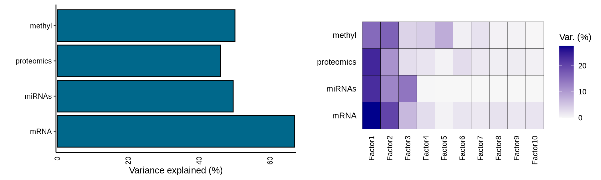
Then, we can look at the correlation between the factors and clinical covariates. First, we correlate the 10 hidden factors with each other, and we see that the factors do not correlate with each other, suggesting that each of them captures a different aspect of the technical or biological variability of the dataset. The only exception could be Factor 5, which seems to weakly correlates with Factors 1, 2, 4, 6, 7 and 8. Second, we correlate the factors with the clinical covariates. We gonna first test for significant association between the factor and the clinical covariate:
- Factor 1 is significantly associated with the kidney carcinoma types, and it is associated with the clinical covariates cancer type, clinical stage, histological grade, histological type, subtype mRNA, subtype miRNA, subtype integrative and subtype selected.
- Factor 2 is also associated with the kidney carcinoma types, and with the clinical covariates cancertype, histological type, subtype selected.
- Factor 3 seems slightly associated with the tumor severity and the covariates pathologic tumor grading, subtype selected, tumor cells, tumor nuclei, tumor stage and vital status.
- Factor 5 strongly correlated with the epigenomics data, and is significantly associated with clinical stage, subtype DNA methylation, subtype integrative and subtype selected.

Third, we check the Pearson correlation coefficient (r) between the factors and the clinical covariates. We can easily spot a pattern of contrapposition of different directions of correlation coefficient for the following clinical covariates in Factor 1 versus Factor 2: cancer type, histological type, subtype DNA methylation, subtype integrative, subtype other and subtype selected, suggesting that these two first factors capture most of the differences of the three different kidney cariconomas (KICH, KIRCH and KIRP). Given the observations we have done in differences in tumor progression (see Section 1.3.7) and different levels of infitrating immune cells (see Chapter 2) between these three kidney carcinomas, it makes sense that the same pattern of contrapposition in the directions of correlation coefficient is observed as well for clinical stage, monocyte infiltration, pathologic tumor grade and tumor nuclei.

As we mentioned before, each factor captures a different dimension of heterogeneity in the data. Mathematically, each factor ordinates the samples along a one-dimensional axis centered at zero. Samples with different signs manifest opposite phenotypes along the inferred axis of variation, with higher absolute value indicating a stronger effect. Interpretation of the factor analysis and the relative position of the samples across each factor is similar to the interpretation of the principal components in a PCA.
Indeed, we can confirm that KICH, KIRC and KIRP are separated along the axis of Factor 1 and Factor 2, as observed in the correlation between the hidden factors and the clinical covariates. More in detail, Factor 1 seems to be a gradient that differentiate first KIRC, then KICH and finally KIRP along its axis. Factor 2, instead, strongly separates KICH from KIRC and KIRP. This result is very encouraging for characterizing molecularly the three kidney carcinoma types, and for inferring multi-omics signatures that discriminate them.
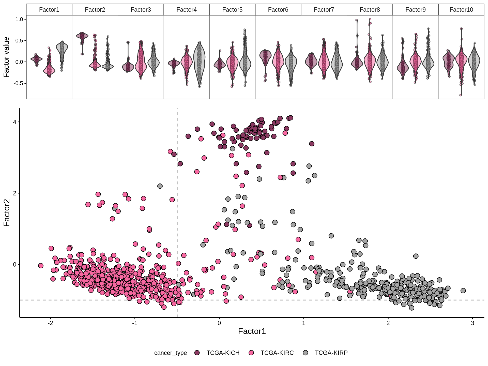
6.2.3 Factor 1: KIRC vs KIRP
Let’s explore the contribution of each omics layer to Factor 1.
The MOFA model predict a weight for each of the features of the omics layer, but we are going to focus on the principal ones in order to build out molecular signature associated with the different kidney carcinoma types. The weights are useful to get an idea of which genes are driving each factor.
For each omics layer we generate scatter plots of the observations vs factor values for the 20 features with highest positive weight and the 20 ones with the highest negative weight. For each feature we compute a linear regression model to explore the linearity of this relationship, and to get as well some estimates on the correlation (R²) and the likelihood (p-value). In addition to the scatterplots, we also plot the top 100 features with the highest absolute weight (either positive or negative), and build a biclustered heatmap out of it. The heatmap allows to discover trends and clusters of features-sample pairs, and test the distribution of different clinical covariates with the samples and the cancer types.


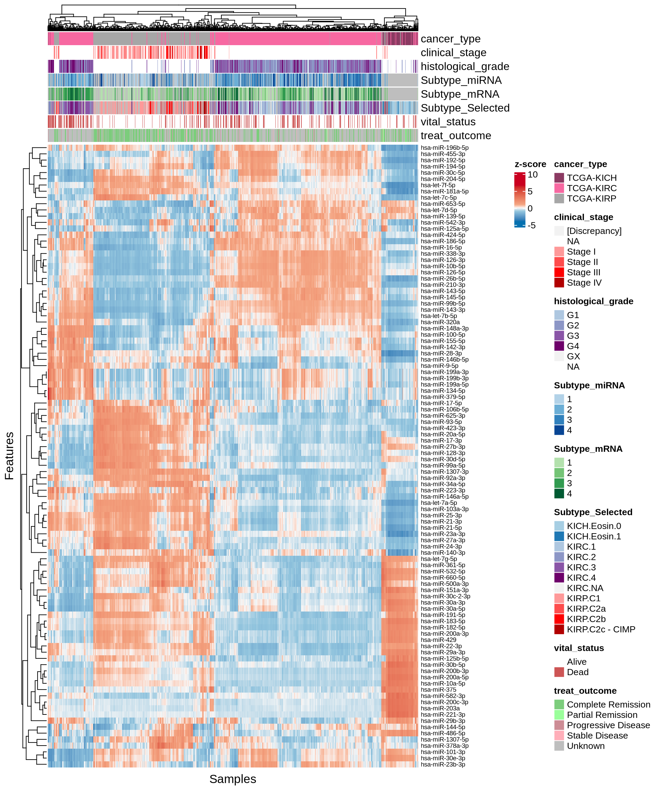

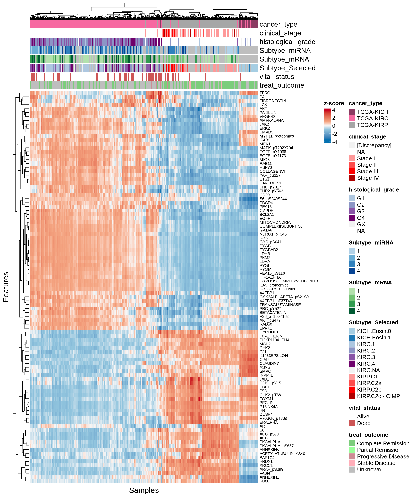

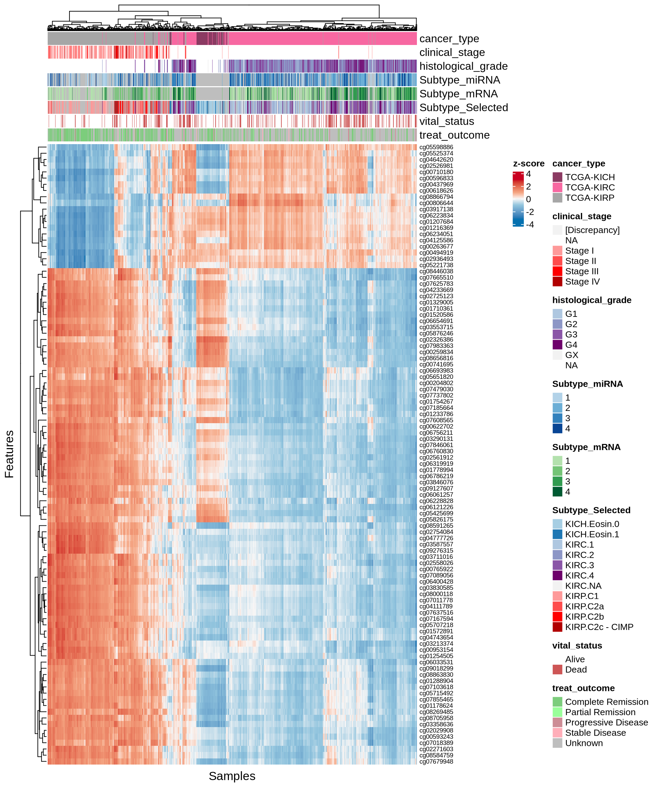
Interpretation of these high dimensional data is not straightforward, but we can pick on some emerging trends:
- Transcriptomics:
- Most of positive features seems not linear. Negative factors, which are strongly associated with KIRC, are instead linear.
- Looking at the heatmap with the top 100 features with highest absolute weight, we can see that these features are mostly associated to KIRC, which clusters in a single large block on the right hand side of the heatmap. KICH and KIRP seems as well quite clustered based on the top 100 transcriptomics features, except for a small clusters of KIRP patients that sits next to next to KIRC where most of the KIRP patients with worse outcome are located.
- micro-RNAs:
- Both features with high positive and high negative weights seems to mostly have linear relationships with Factor 1. We can observe as well the KIRC -> KICH -> KIRP gradient detected as well in the Factor 1 X Factor 2 biplot. Some of the features scatterplots also show some linear artefacts, where the samples all sits at the same y-axis position. This is probably due to the fact that in Factor 1 the weight is 0 for most of the micro-RNAs features.
- Looking at the heatmap, KIRC is clearly divided into two different clusters, with the smallest one on the left-hand side of the heatmap having most of the patients with worse outcome (vital status == “Dead”). The features with the highest weight responsible for this cluster are hsa-miR-21-3p, hsa-miR-21-5p, hsa-miR-25-3p, hsa-miR-379-5p, hsa-miR-134-5p and the micro-RNA family hsa-miR-199a-3p, hsa-miR-199a-5p, hsa-miR-199b-3p. KICH and KIRP seems to have clear patterns of different micro-RNAs weights that separates them from KIRC.
- Proteomics:
- Most of the proteomics features seems linear for Factor 1. There is a clear cluster separating KIRC from KICH and KIRP.
- The proteomics data are clearly driven from the metabolic signature of KIRC with high glycolysis (Glyceraldehyde-3-Phosphate Dehydrogenase GAPDH, Lactate Dehydrogenase A and B LDHA and LDHB, Pyruvate Kinase M1/2 PKM2, Glycogen Phosphorylase B, L and M PYGB, PYGL, PYGM) and hypoxic adaptation (Carbonic Anhydrase 9 CA9, Hypoxia Inducible Factor 1 Subunit Alpha HIF1A, Heat-Shock Protein 70 HSP70 and pT346: N-Myc Downstream Regulated 1 NDRG1_pT346). In addition to those proteins, we identified also oncogenes p53, Cyclin B1, and PDL1, which is involved in tumor immune evasion
- The heatmap of top 100 features with highest absolute weight show clear clusters separating KIRC from KICH and KIRP. KIRP can possibly be separated as well into two smaller subclusters driven by two different groups of proteins.
- Epigenomics:
- The scatterplots of the features with highest absolute weights suggested that linearity is not present for all of them. However, KIRC and KIRP are clearly separated, and the KIRC -> KICH -> KIRP gradient seems maintained across all top features.
- Looking at the heatmap, KICH methylation profile seems overlapping with both KIRC and KIRP. KIRC samples are divided in 2 clusters with no clear correlation with the clinical covariates that we have included on the top of the heatmap. Most of the top 100 epigenomics features are associated with KIRP.
Overall, based on these results, we expect transcriptomics, proteomics and epigenomics top features to characterize KIRC. KICH methylation profile seems overlapping with both KIRC and KIRP. micro-RNAs top features seems to separate the KIRC patients with had a worse clinical outocome.
6.2.3.1 Multi-omics interaction network
In the next step, we retrieve the most important features in Factor 1 for each omics layer and we look manually curated databases for gene-gene interaction in order to refine the molecular signature we are building for the kidney carcinomas. We could follow two very naive strategies:
- if weights have a normal distribution, set a threshold above/below mean +/- 2sd (red dotted lines).
- Select top 10% features with highest / lowest weights for each omics layer (blue dots).
Based on the sorted features vs weights distributions, we can see that for Factor 1 the features do not have a normal distribution in any of omics layer. We therefore decide to get the top 10% features with the highest absolute weight to build our gene network.

To include the epigenomics information in the gene network, we will map the top methylation probes to their corresponding gene based on the Illumina Methylation 450k chip annotation profile provided by the minfi R package.
We retrieve the gene interactions networks from two main sources: the STRING database and OmniPath. STRING aggregates information on Protein-Protein Interactions (PPIs) from multiple sources. They provide several levels of evidences with corresponding confidence scores. We have decided to retain only Protein-Protein Interactions that were experimentally validated and with a confidence score of at least 700 (in a scale from 0 to 1000). Among the others, OmniPath aggregates information on gene interactions, and it is not restricted to PPIs, but covers several aspects of gene interactions and regulatory networks. From OmniPath, we retrieve:
- post translational interactions: physical interactions of proteins, i.e.: PPIs.
- transcriptional interactions: gene regulatory interactions, i.e. interactions between transcription factors and the genes they regulates.
- post transcriptional interaction: i.e. miRNAs-mRNA interactions and the resulting gene expression regulation.
- miRNAs transcriptional interactions: i.e. transcriptional regulation of micrp-RNAs.
Let’s integrate the interaction networks pulled from OmniPath with the high confidence PPI retrieved from STRING into a single, cohesive gene interaction network where we can layer the multi-omics information from the kidney carcinomas.
All these information combined allow us to leverage the contribution of the top features from each omics layer. Let’s plot them on the gene network we have reconstructed.
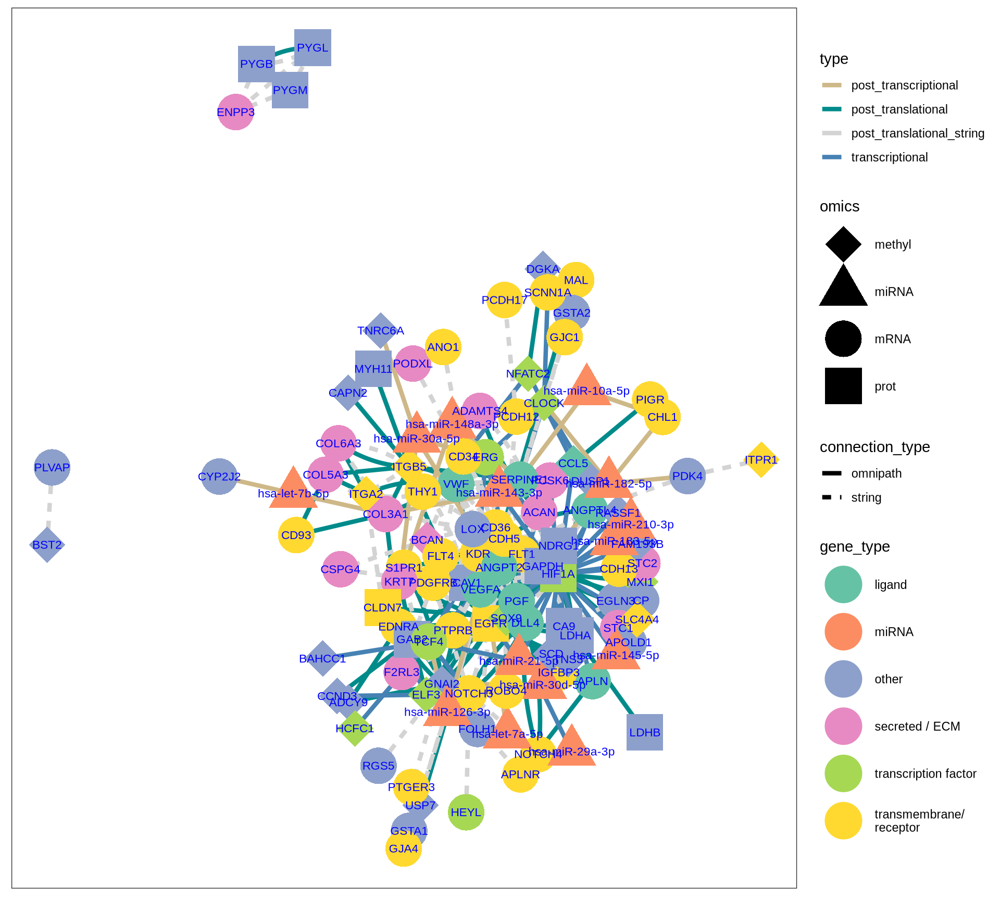
The gene interaction network we have reconstructed provides great insights on the molecular characterization of KIRC and KIRP, based on the magnitude of the Factor 1 weights for each omics feature:
- KIRC:
- FLT1, HIF1A, NOTCH4, PDGFRB, VEGFA suggest a hypoxia-driven microenvironment for KIRC.
- overexpression of ENPP3 transcript and overabundance of the proteins PYGB, PYGL, PYGM suggest higher glycolysis and Warburg effect in KIRC compared to KICH and KIRP.
- miR-210-3p and miR-143-3p supports the higher hypoxic adaptation and metabolic rewiring of KIRC.
- ITGA2 hypermethylated, and COL3A1, COL5A3, COL6A3 suggests a stronger ECM remodelling and EMT signal in KIRC vs KIRP and KICH.
- KIRP:
- CHL1, CLDN7, KRT7, PIGR, SLC34A2, WFDC2, suggest a larger role of epithelial integrity, tight junctions and differentiation in KIRP and KICH when compared to KIRC.
- miR-21-5p and miR-10a-5p may promote proliferation and angiogenesis in KIRP.
6.2.3.2 Pathway analysis
As we have done for the differentially abundant features at the single omics level, we can run a Gene Set Enrichment Analysis (GSEA) on the multi-omics features we have identified in Factor 1.


We gathered the following insights from the gene set enrichment analyses:
- We could not find any enriched relevant GO terms.
- We identified two KEGG pathways: HIF-1 singnaling pathways, with 8/10 genes present, and the generic Metabolic pathway, with 13 / 20 genes present. Both of these pathways are associated with the Warburg effect present in KIRC biopsies.
- We have identified 15 Reactome pathways with an adjusted p-value =< 0.05, but their gene coverage (gene ratio) was always low (~10% or less). Among them, however, we have identified extracellular matrix organization, MET promotes cell motility, Regulation of gene expression by Hypoxia-inducible Factor, Signaling by NOTCH and Signaling by VEGF, which are all common molecular signature that differentiate KIRC from KIRP.
- We have identified 19 Wikipathways with an adjusted p-value =< 0.05. Similarly to the Reactome pathwats, their gene coverage (gene ratio) was low (~17% or less). However, the pathways we identified as enriched are of particular interest and were highly accurate in identified the molecular signatures of KIRC and KIRP. Among the others, we identified: Clear cell renal cell carcinoma pathways, Focal adhesion: PI3K-Akt-mTOR-signaling, Warburg effect modulated by deubiquitinating enzymes and their substrates, Warburg effect modulated by deubiquitinating enzymes and their substrates, miRNA targets in ECM and membrane receptors, Notch signaling, Genes controlling nephrogenesis, Macrophage-stimulating protein (MSP) signaling.
While the multi-omics factorial model did not rescued all the genes involved in the key signature pathways of KIRC and KIRP, the figure that emerged was more complete than the one reconstructed from each single omics layer. While not all features in a pathway may be highly disregulated (and having a high absolute weight in the MOFA Factor), the combination of transcriptomics, proteomics, micro-RNA and epigenomics signal allowed the reconstruction of a molecular network of interactions that properly describe KIRC and KIRP. For each feature, we have information on its weight on the model, the omic origin (e.g: transcriptomics evidence), their molecular function (e.g.: transcription factor, transmembrane receptor, etc.) and the nature of the molecular interaction with the other features in the model. Taken all together, the KIRC vs KIRP gene network may facilitate the discovery of kidney carcinoma specific therapeutic targets (see ?sec-target-discovery).
6.2.4 Factor 2: KICH
Let’s explore the contribution of each omics layer to Factor 2. For each omics layer we generate the scatter plots and a biclustered heatmap for the top 40 and 100 features with higher weights, as we have done for Factor 1 (see Section 6.2.3).
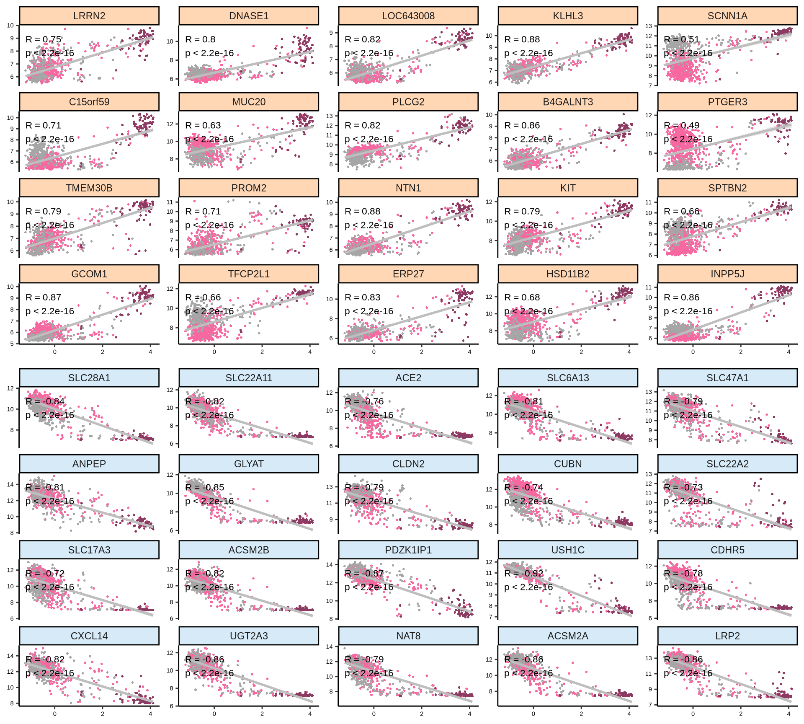

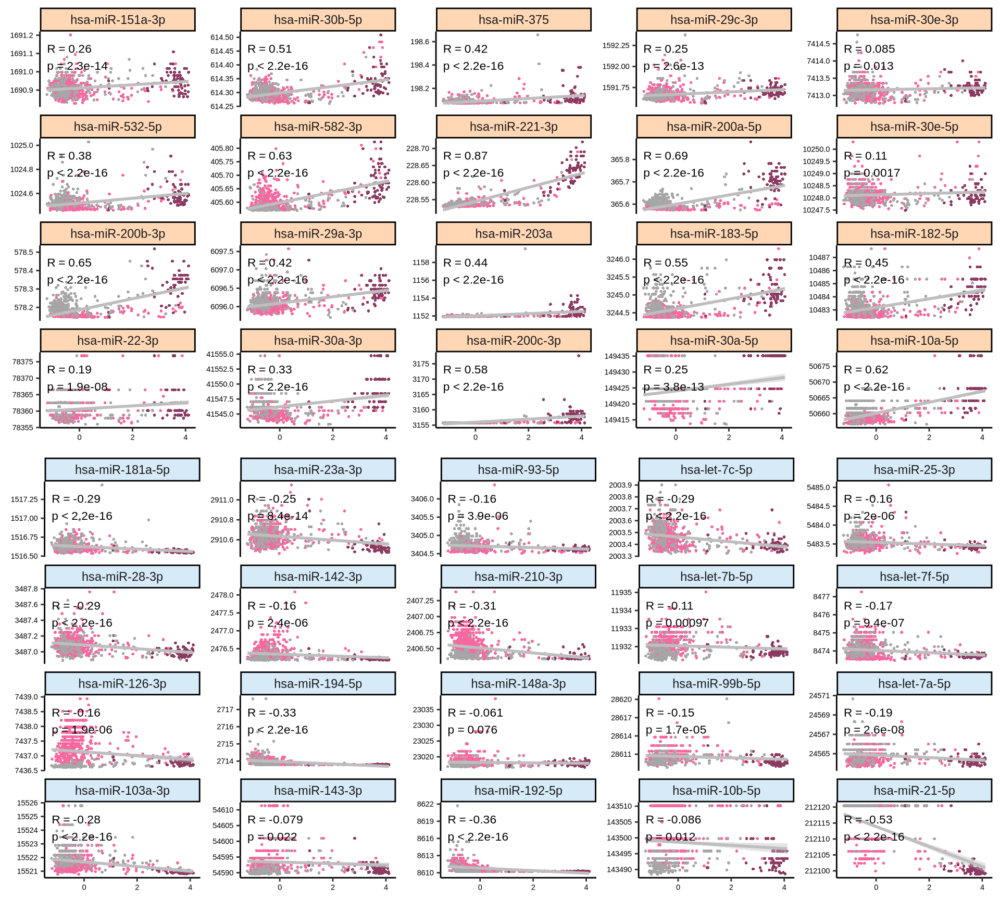

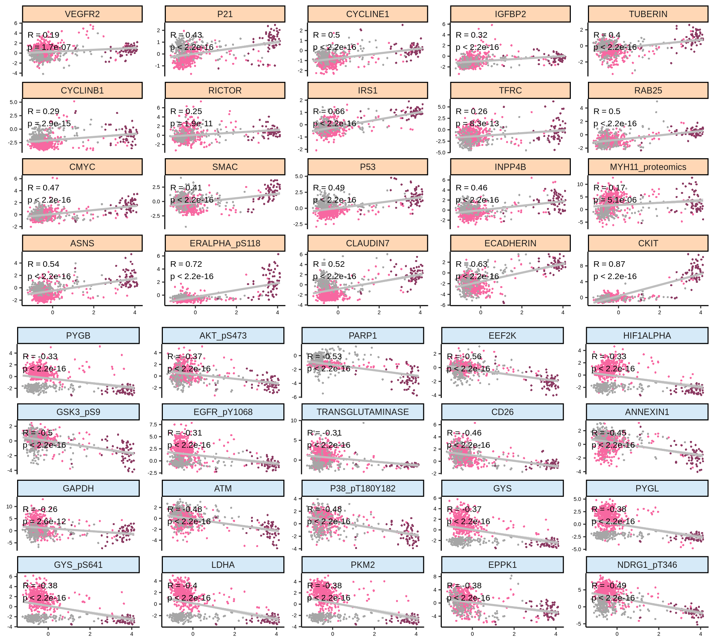

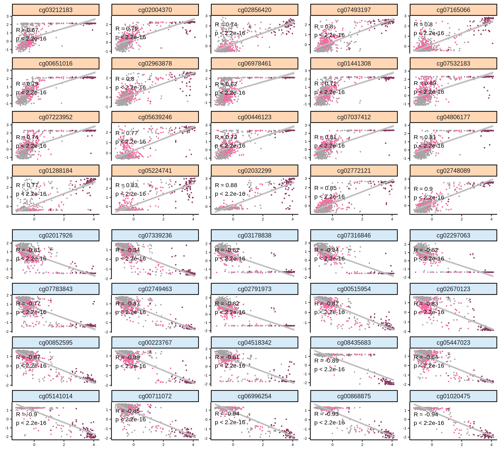

Let’s look at the emerging trends from the multi-omics factor model in Factor2:
- Transcriptomics:
- Most of the positive features, that are correlated with KICH, seems linear, in contrast to the negative ones. As also observed in the Factor 1 X Factor 2 biplot, KICH biopsies are clearly separated from KIRC and KIRP biopsies, which in general clusters together. Proto-oncogene KIT is strongly associated with KICH in Factor 2, which is consistent with what we observed in the proteomics analyses (see Chapter 3).
- Looking at the heatmap with the top 100 features with highest absolute weight, we can see that just 16 of them are associated with KICH, but their weight are very high. Based on Factor 2 weigths, expression profiles are similar in KIRC and KIRP, and the clusters of these two kidney carcinoma types are not well defined. A small subcluster of KIRC and KIRP biopsies sits next to the KICH cluster, has a different profile than the rest of KIRC and KIRP samples and seems enriched in patients with worse prognosis (vital status).
- micro-RNAs:
- The scatterplots indicates that the separation between KICH and KIRC or KIRP samples is less clear in the micro-RNAs when compared to the transcriptomics data. The linearity assumption seems respected in many cases, and we observe some linear artefacts as observed as well in Factor 1 (see Section 6.2.3).
- The heatmap indicates again a clear solid cluster of KICH biopsies. KIRC and KIRP seems to have different expression profiles based on Factor 2 weights. KIRC samples clusters in two separated groups, the smallest one with a higher number of patients with worse outcome
- Proteomics
- Most of the proteomics features seems not linear for Factor 2, but they clearly separates KICH biopsies from KIRC and KIRP. For features strongly associate with KIRC (e.g.: PYGB, HIF1ALPHA, LDHA), there is a clear separation between KIRC and KIRP biopsies as well. The features with the highest positive weight (strongly associated with KIRC) are CKIT, CLAUDIN7, ECADHERIN, and this is consistent with the idea that KICH tumors generally retain their epitelial differentiation.
- The heatmap indicates again a clear solid cluster of KICH biopsies. KIRC and KIRP seems to have different expression profiles based on Factor 2 weights.
- Epigenomics:
- The scatterplots of the features with highest absolute weights suggested that linearity is present in most of these features.
- Looking at the heatmap, KICH biopsies have a strong profile of 44 probes with high positive weight in Factor 2. The top 100 features with highest absolute weight for Factor 2 fail to further discriminate between KIRC and KIRP biopsies, which clusters together in interspersed groups.
Overall, based on these results, we expect Factor 2 transcriptomics, proteomics and epigenomics top features to characterize KICH biopsies.
6.2.4.1 Multi-omics interaction network
In the next step, we retrieve the most important features in Factor 2 for each omics layer and we look manually curated databases for gene-gene interaction in order to refine the molecular signature we are building for the kidney carcinomas.
Based on the sorted features vs weights distributions, we can see that for Factor 2 the features do not have a normal distribution in any of omics layer. We therefore decide to get the top 10% features with the highest absolute weight to build our gene network.
As we have done for Factor 1 (see Section 6.2.3), we layer the multi-omics features identified with the Factor Analysis on top of a gene interaction network build by merging STRING and gene networks from OmniPath. To help to generate a simplified, more readable gene network, we can also remove the PPI interactions retrieved from STRING, and use only a gene interaction networks reconstructed from the OmniPath interaction networks.

The gene interaction network we have reconstructed provides great insights on the molecular characterization of KICH, based on the magnitude of the Factor 2 weights for each omics feature:
- Overexpressed transcripts for genes INPP5J, KIT, NTN1, SCNN1A suggest a strong differentiated epithelial phenotype.
- Suppression of HNF4 transcript and lower abundance of HIF1A, LDHA and NDRG1 proteins suggest reduced metabolic activity and reliance on glycolysis in KICH compared to KIRC and KIRP.
- Hypometilation of homeobox genes HOXA7, HOXB3, HOXB5, HOXC4 may allow activation of differentiation pathways, maintaining epithelial identity.
- miR-200c-3p could be involved in maintaining the epithelial integrity and inhibit EMT in KICH.
- Suppressed miR-21-5p could explain the limited pathways associated with immune evasion and inflammation in KICH.
6.2.4.2 Pathway analysis
As we have done for the differentially abundant features at the single omics level, we can run a Gene Set Enrichment Analysis (GSEA) on the multi-omics features we have identified in Factor 2.

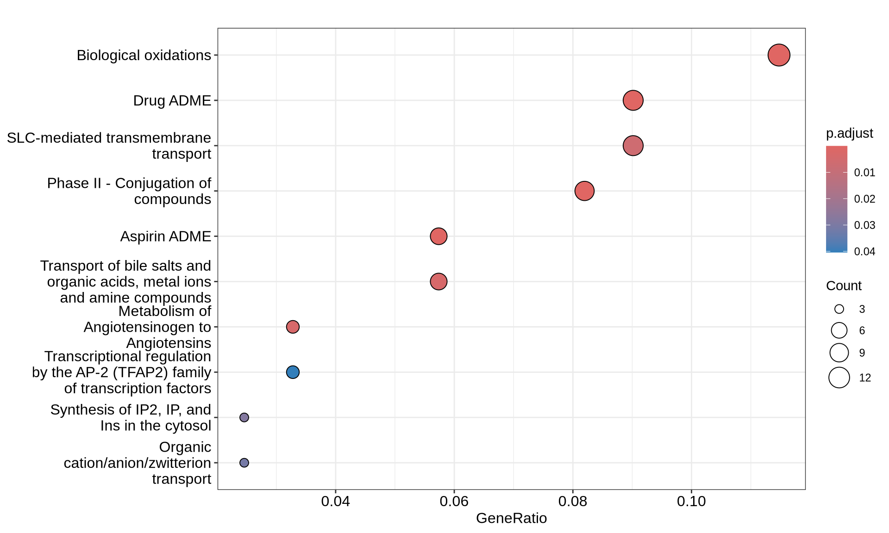
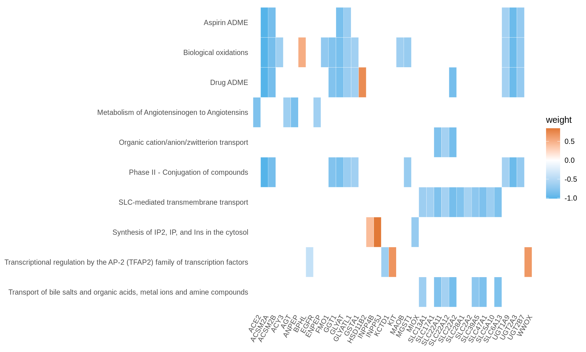
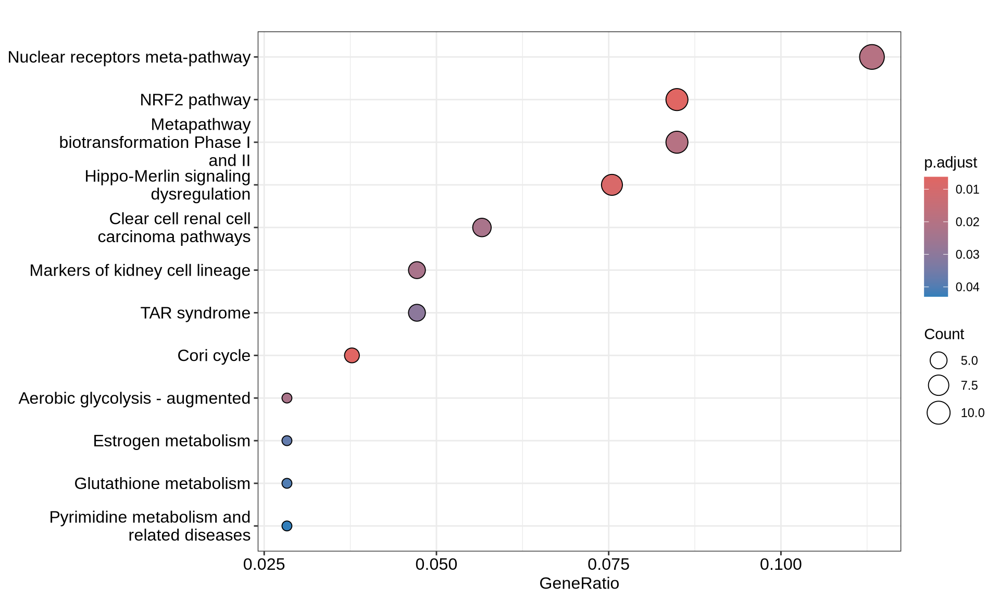

The combination of transcriptomics, proteomics, micro-RNA and epigenomics signal allowed the reconstruction of a molecular network of interactions that properly describe KICH. For each feature, we have information on its weight on the model, the omic origin (e.g: transcriptomics evidence), their molecular function (e.g.: transcription factor, transmembrane receptor, etc.) and the nature of the molecular interaction with the other features in the model.
6.3 Lessons Learnt
So far, we have learnt:
- A
Based on genomics and epigenomics data, we have learnt:
- Copy Number Variants:
- KICH has significantly more genome instability and CNV events than KIRC and KIRP
- whole genome duplication seems more likely to occur than loss of chromosomes
- there is a link between CNVs signatures and cancer advancement, which is a common feature across all kidney carcinomas and not limited to KIRC, KIRP or KICH.
- Somatic Mutations:
- KIRC is the kidney carcinoma with the highest amount of non-silent somatic mutations.
- KICH:
- ~30% of the patients (21 / 66) had a non-silent mutation in TP53.
- 9% of patients (6 / 66) having a mutation on PTEN.
- KIRC:
- 47% of patients (170 / 365) with mutation in VHL
- ~40% of patients (145 / 365) with mutation on PBRM1
- ~20% of patients (72 / 365) with non-silent somatic mutations on TTN
- KIRP:
- 16% of KIRP patients (45 / 280) has non-silent somatic mutations on TTN
- 9% of KIRP patients (25 / 280) with mutation on MUC16
- 8% of KIRP patients (22 / 280) with mutation on MET
- Epigenomics:
- Exploratory analysis suggests:
- Principal Component Analysis can discriminates between KICH, KIRC and KIRP.
- subtype DNAmeth co-correlates with residual disease, more advanced cancer and worse prognosis, suggesting that DNA methylations and epigenomics plays a major role in cancer evolution and disease outcome.
- Differential Gene Expression analysis:
- strong methylation signature that discriminates KICH from KIRC and KIRP (> 4,000 probes).
- GSEA on differentially methylated probes supports the idea that:
- KICH biopsies mostly retained their epithelial differentiation that was instead lost in KIRC and in KIRP.
- Higher abundance of infiltrating Macrophages M0 and M2 in KIRP.
- A pro-inflammatory, hypoxic microenvironment in KIRC.
- GSEA on Differentially Methylated function Regions support the idea that:
- General theme of epithelial differentiation retention in KICH.
- A stronger Epithelial-to-Mesenchimal Transition in KIRC, with a signature of extra-cellular matrix remodelling and cell migration.
- MET pathway is differentially methylated in KIRP, which is consistent with the higher chance of MET non-silent somatic mutation in this kind of kidney carcinoma.
- Exploratory analysis suggests:
6.4 Session Information
Note
R version 4.3.2 (2023-10-31)
Platform: x86_64-conda-linux-gnu (64-bit)
Running under: openSUSE Tumbleweed
Matrix products: default
BLAS/LAPACK: /home/andrea/miniforge3/envs/moai/lib/libmkl_rt.so.2; LAPACK version 3.9.0
locale:
[1] LC_CTYPE=en_US.UTF-8 LC_NUMERIC=C
[3] LC_TIME=it_IT.UTF-8 LC_COLLATE=en_US.UTF-8
[5] LC_MONETARY=en_US.UTF-8 LC_MESSAGES=en_US.UTF-8
[7] LC_PAPER=en_US.UTF-8 LC_NAME=C
[9] LC_ADDRESS=C LC_TELEPHONE=C
[11] LC_MEASUREMENT=en_US.UTF-8 LC_IDENTIFICATION=C
time zone: Europe/Brussels
tzcode source: system (glibc)
attached base packages:
[1] parallel grid stats4 stats graphics grDevices utils
[8] datasets methods base
other attached packages:
[1] UpSetR_1.4.0
[2] tidygraph_1.3.1
[3] umap_0.2.10.0
[4] stringr_1.5.1
[5] STRINGdb_2.14.3
[6] scales_1.3.0
[7] RColorBrewer_1.1-3
[8] pathview_1.42.0
[9] org.Hs.eg.db_3.18.0
[10] MOFA2_1.12.1
[11] infiltR_0.1.0
[12] IlluminaHumanMethylation450kanno.ilmn12.hg19_0.6.1
[13] minfi_1.48.0
[14] bumphunter_1.44.0
[15] locfit_1.5-9.10
[16] iterators_1.0.14
[17] foreach_1.5.2
[18] Biostrings_2.70.3
[19] XVector_0.42.0
[20] igraph_2.1.4
[21] gridExtra_2.3
[22] ggraph_2.2.1
[23] ggplot2_3.5.1
[24] forcats_1.0.0
[25] edgeR_4.0.16
[26] limma_3.58.1
[27] DT_0.33
[28] dplyr_1.1.4
[29] DOSE_3.28.2
[30] DESeq2_1.42.1
[31] SummarizedExperiment_1.32.0
[32] MatrixGenerics_1.14.0
[33] matrixStats_1.5.0
[34] GenomicRanges_1.54.1
[35] GenomeInfoDb_1.38.8
[36] data.table_1.16.4
[37] cowplot_1.1.3
[38] clusterProfiler_4.10.1
[39] BiocSingular_1.18.0
[40] BiocParallel_1.36.0
[41] AnnotationDbi_1.64.1
[42] IRanges_2.36.0
[43] S4Vectors_0.40.2
[44] Biobase_2.62.0
[45] BiocGenerics_0.48.1
loaded via a namespace (and not attached):
[1] vroom_1.6.5 progress_1.2.3
[3] ggpp_0.5.8-1 HDF5Array_1.30.1
[5] vctrs_0.6.5 RApiSerialize_0.1.4
[7] shape_1.4.6.1 digest_0.6.37
[9] png_0.1-8 proxy_0.4-27
[11] OmnipathR_3.10.1 ggrepel_0.9.6
[13] corrplot_0.95 magick_2.8.5
[15] MASS_7.3-60.0.1 reshape_0.8.9
[17] reshape2_1.4.4 qvalue_2.34.0
[19] withr_3.0.2 psych_2.4.12
[21] xfun_0.50 ggfun_0.1.8
[23] ggpubr_0.6.0 survival_3.8-3
[25] doRNG_1.8.6.1 memoise_2.0.1
[27] MatrixModels_0.5-3 gson_0.1.0
[29] GlobalOptions_0.1.2 tidytree_0.4.6
[31] gtools_3.9.5 KEGGgraph_1.62.0
[33] Formula_1.2-5 prettyunits_1.2.0
[35] KEGGREST_1.42.0 httr_1.4.7
[37] rstatix_0.7.2 restfulr_0.0.15
[39] hash_2.2.6.3 rhdf5filters_1.14.1
[41] stringfish_0.16.0 rhdf5_2.46.1
[43] generics_0.1.3 reactome.db_1.86.2
[45] dir.expiry_1.10.0 curl_6.2.0
[47] zlibbioc_1.48.2 ScaledMatrix_1.10.0
[49] polyclip_1.10-7 doSNOW_1.0.20
[51] GenomeInfoDbData_1.2.11 quadprog_1.5-8
[53] SparseArray_1.2.4 doParallel_1.0.17
[55] xtable_1.8-4 evaluate_1.0.3
[57] S4Arrays_1.2.1 BiocFileCache_2.10.2
[59] preprocessCore_1.64.0 hms_1.1.3
[61] irlba_2.3.5.1 qs_0.27.2
[63] colorspace_2.1-1 filelock_1.0.3
[65] polynom_1.4-1 readxl_1.4.3
[67] reticulate_1.40.0 magrittr_2.0.3
[69] readr_2.1.5 Rgraphviz_2.46.0
[71] later_1.4.1 viridis_0.6.5
[73] ggtree_3.10.1 limSolve_1.5.7.1
[75] lattice_0.22-6 genefilter_1.84.0
[77] SparseM_1.84-2 XML_3.99-0.18
[79] shadowtext_0.1.4 class_7.3-23
[81] pillar_1.10.1 nlme_3.1-167
[83] caTools_1.18.3 compiler_4.3.2
[85] beachmat_2.18.1 RSpectra_0.16-2
[87] stringi_1.8.4 lubridate_1.9.4
[89] GenomicAlignments_1.38.2 plyr_1.8.9
[91] crayon_1.5.3 abind_1.4-8
[93] BiocIO_1.12.0 gridGraphics_0.5-1
[95] chron_2.3-62 graphlayouts_1.2.2
[97] bit_4.5.0.1 fastmatch_1.1-6
[99] codetools_0.2-20 openssl_2.3.1
[101] MCPcounter_1.2.0 e1071_1.7-16
[103] GetoptLong_1.0.5 multtest_2.58.0
[105] splines_4.3.2 circlize_0.4.16
[107] Rcpp_1.0.14 basilisk_1.14.3
[109] quantreg_6.00 dbplyr_2.5.0
[111] sparseMatrixStats_1.14.0 HDO.db_0.99.1
[113] cellranger_1.1.0 knitr_1.49
[115] blob_1.2.4 clue_0.3-66
[117] fs_1.6.5 checkmate_2.3.2
[119] DelayedMatrixStats_1.24.0 logger_0.4.0
[121] ggsignif_0.6.4 ggplotify_0.1.2
[123] tibble_3.2.1 sqldf_0.4-11
[125] Matrix_1.6-5 statmod_1.5.0
[127] tzdb_0.4.0 lpSolve_5.6.23
[129] tweenr_2.0.3 pkgconfig_2.0.3
[131] pheatmap_1.0.12 tools_4.3.2
[133] cachem_1.1.0 RSQLite_2.3.9
[135] rvest_1.0.4 viridisLite_0.4.2
[137] DBI_1.2.3 graphite_1.48.0
[139] fastmap_1.2.0 rmarkdown_2.29
[141] Rsamtools_2.18.0 broom_1.0.7
[143] patchwork_1.3.0 graph_1.80.0
[145] carData_3.0-5 scrime_1.3.5
[147] selectr_0.4-2 snow_0.4-4
[149] farver_2.1.2 mgcv_1.9-1
[151] scatterpie_0.2.4 gsubfn_0.7
[153] yaml_2.3.10 rtracklayer_1.62.0
[155] illuminaio_0.44.0 cli_3.6.3
[157] purrr_1.0.2 siggenes_1.76.0
[159] GEOquery_2.70.0 lifecycle_1.0.4
[161] askpass_1.2.1 uwot_0.2.2
[163] ggpmisc_0.6.1 backports_1.5.0
[165] annotate_1.80.0 timechange_0.3.0
[167] gtable_0.3.6 rjson_0.2.23
[169] ape_5.8-1 jsonlite_1.8.9
[171] bitops_1.0-9 bit64_4.6.0-1
[173] Rtsne_0.17 yulab.utils_0.2.0
[175] base64_2.0.2 ReactomePA_1.46.0
[177] proto_1.0.0 RcppParallel_5.1.10
[179] GOSemSim_2.28.1 lazyeval_0.2.2
[181] htmltools_0.5.8.1 enrichplot_1.22.0
[183] GO.db_3.18.0 rappdirs_0.3.3
[185] basilisk.utils_1.14.1 glue_1.8.0
[187] RCurl_1.98-1.16 treeio_1.26.0
[189] mclust_6.1.1 mnormt_2.1.1
[191] quantiseqr_1.10.0 R6_2.5.1
[193] tidyr_1.3.1 gplots_3.2.0
[195] labeling_0.4.3 GenomicFeatures_1.54.4
[197] cluster_2.1.8 rngtools_1.5.2
[199] Rhdf5lib_1.24.2 beanplot_1.3.1
[201] aplot_0.2.4 DelayedArray_0.28.0
[203] tidyselect_1.2.1 plotrix_3.8-4
[205] ggforce_0.4.2 xml2_1.3.6
[207] car_3.1-3 rsvd_1.0.5
[209] munsell_0.5.1 KernSmooth_2.23-26
[211] nor1mix_1.3-3 ComplexHeatmap_2.18.0
[213] htmlwidgets_1.6.4 fgsea_1.28.0
[215] biomaRt_2.58.2 rlang_1.1.5
[217] Cairo_1.6-2